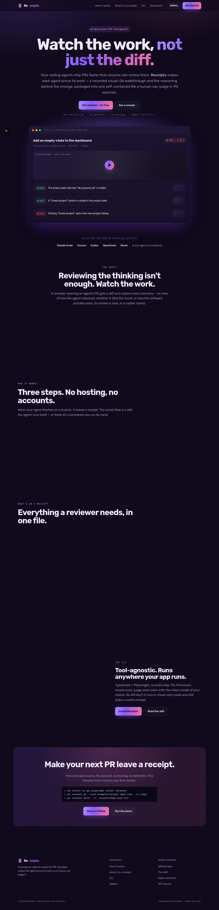
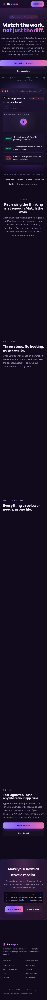

Make the marketing landing page more responsive and add entrance/scroll animations
▶ Watch the work
Recorded Playwright session across every acceptance claim.
Acceptance criteria — expected vs actual
⚠ trace.zip pruned (all claims passed; the trace is kept only on failure).


How the agent thought
Plan
Add a CSS-only staggered entrance animation to the hero (eyebrow/h1/subtitle/cta/meta/mock) using animation-delay per element, add a pulsing glow to the eyebrow status dot, and extend the existing IntersectionObserver-driven `.reveal` mechanism so multi-card sections (feature grid, steps, contrast cards) cascade child-by-child via nth-child transition-delay instead of fading in as one block. Separately, add a `max-width: 480px` breakpoint so the hero CTA buttons stack full-width on narrow phones instead of center-wrapping unevenly, and simplify the receipt-mockup claim rows (hide the small screenshot swatch) so they don't feel cramped at that width.
Decisions
- Implemented the stagger with CSS transition-delay on child selectors instead of a second JS timer/observer, so RevealOnScroll.tsx stays untouched and the effect degrades safely if JS is slow to hydrate
- Used a dedicated max-width: 480px breakpoint rather than widening the existing 820px/860px breakpoints, so the tablet layout (which already works) is untouched and only the tightest phone widths change
- Kept all new animation under the existing prefers-reduced-motion guard so users who disable motion still get the fully visible, static layout instantly
Rejected alternatives
- A JS-driven stagger (setTimeout per card) — rejected in favor of declarative CSS transition-delay, which is simpler and keeps working even before hydration finishes
- Continuous parallax/tilt hover effects on the hero mockup — rejected as unnecessary motion for a marketing page and harder to reconcile with prefers-reduced-motion
- A hamburger mobile nav menu — out of scope for this pass; the nav already collapses to a single CTA under 860px and wasn't the reported pain point
prompt log (2 turns)
Files changed
web/landing
| web/app/landing.css | +118 | −1 |